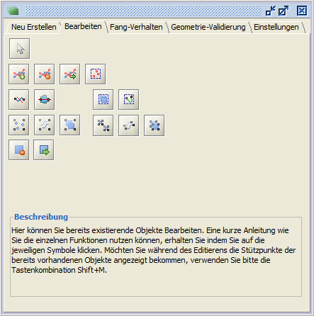
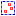
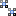
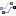

|
|
Objekte bearbeiten
Mit Hilfe der Funktionen innerhalb dieses Reiters, können bestehende Objekte im Vektorformat bearbeitet werden.
Basisdatentypen sind Punkt, Linie und Fläche.
Bevor ein Objekt bearbeitet werden kann, mufl der entsprechende Ziel-Ebene in der Ebenenansicht selektiert (klick mit der LM-Taste)
und editierbar (klick mit der RM-Taste > aus dem Kontextmenü 'editierbar' auswählen) geschaltet werden.

|
|
|
Stützpunkte bearbeiten
Bevor ein Stützpunkt bearbeitet werden kann, mufl die betreffende Geometrie via
'Objekt selektieren'-Button ausgewählt werden, danach stehen folgende Optionen zur Verfügung:
 Stützpunkt hinzufügen: Stützpunkte können nur innerhalb von Linien- oder Flächen-Geometrien durch einmaliges Klicken mit der LM-Taste auf die gewünschte Stelle in die Kartenansicht hinzugefügt werden. Gleichzeitig öffnet sich ein neues Fenster, in welchem die Eigenschaften des selektierten Objektes angezeigt und die Möglichkeit zur Speicherung bzw. Verwerfung angeboten werden. Die Stützpunkte können sowohl auf einer existierenden Linie/Begrenzung, als auch daneben gesetzt werden. Ist letzteres der Fall, wird der Linienverlauf automatisch angepasst. Stützpunkt hinzufügen: Stützpunkte können nur innerhalb von Linien- oder Flächen-Geometrien durch einmaliges Klicken mit der LM-Taste auf die gewünschte Stelle in die Kartenansicht hinzugefügt werden. Gleichzeitig öffnet sich ein neues Fenster, in welchem die Eigenschaften des selektierten Objektes angezeigt und die Möglichkeit zur Speicherung bzw. Verwerfung angeboten werden. Die Stützpunkte können sowohl auf einer existierenden Linie/Begrenzung, als auch daneben gesetzt werden. Ist letzteres der Fall, wird der Linienverlauf automatisch angepasst.
 Stützpunkt löschen: Stützpunkte können nur innerhalb von Linien- oder Flächen-Geometrien durch einmaliges Klicken mit der LM-Taste auf den gewünschten Stützpunkt in der Kartenansicht gelöscht werden. Gleichzeitig öffnet sich ein neues Fenster, in welchem die Eigenschaften des selektierten Objektes angezeigt und die Möglichkeit zur Speicherung bzw. Verwerfung angeboten werden. Stützpunkt löschen: Stützpunkte können nur innerhalb von Linien- oder Flächen-Geometrien durch einmaliges Klicken mit der LM-Taste auf den gewünschten Stützpunkt in der Kartenansicht gelöscht werden. Gleichzeitig öffnet sich ein neues Fenster, in welchem die Eigenschaften des selektierten Objektes angezeigt und die Möglichkeit zur Speicherung bzw. Verwerfung angeboten werden.
Stützpunkt verschieben: durch Klicken und Ziehen des gewünschten Stützpunktes mit gedrückter LM-Taste. Gleichzeitig öffnet sich ein neues Fenster, in welchem die Eigenschaften des selektierten Objektes angezeigt und die Möglichkeit zur Speicherung bzw. Verwerfung angeboten werden. Die Stützpunkte können sowohl auf einer existierenden Linie/Begrenzung verschoben werden (verändert die Objektform nicht), als auch beliebig innerhalb des Kartenfeldes. Ist letzteres der Fall, wird die Objektform automatisch angepasst.
 Stützpunkte zusammenfassen: zuerst werden durch das Aufziehen eines Auswahlrechtecks mit gedrückter LM-Taste die betreffenden Stützpunkte ausgewählt. Anschlieflend kann der neue Stützpunkt an einer beliebigen Stelle in der Karte durch einmaliges Klicken mit der LM-Taste gesetzt werden.
|
|
|
Punkte bearbeiten
Bevor ein Punkt/Punktgruppe bearbeitet werden kann, mufl die betreffende Geometrie nach dem Aktivieren des
'Objekt selektieren'-Buttons ausgewählt werden. Danach stehen folgende Optionen zur Verfügung:
Punkte verschieben: 'Objekt verschieben' aktivieren und dann mit gedrückter LM-Taste das/die gewünschte(n) Objekt(e) verschieben. Nach dem Losgelassen der LM-Taste verbleibt das/die Objekt(e) an der letzten Position.
Punkte löschen: durch das Aktivieren des entsprechenden Buttons werden die gewünschten Objekte gelöscht.
Punkte gruppieren: durch das Aktivieren des entsprechenden Buttons werden die gewünschten Objekte zu einer MultiPoint-Geometrie zusammengefasst.
 Gruppierung von Punkten aufheben: durch das Aktivieren des entsprechenden Buttons wird Gruppierung der gewünschten MultiPoint-Geometrie aufgehoben.
|
|
|
Linien bearbeiten
Bevor eine Linie/Liniengruppe bearbeitet werden kann, mufl die betreffende Geomerie nach dem Aktivieren des
'Objekt selektieren'-Buttons ausgewählt werden. Danach stehen folgende Optionen zur Verfügung:
Linie verschieben: den Button 'Objekt verschieben' aktivieren und dann mit gedrückter LM-Taste das/die gewünschte(n) Objekt(e) verschieben. Nach dem Losgelassen der LM-Taste verbleibt das/die Objekt(e) an der letzten Position.
Linie löschen: durch das Aktivieren des entsprechenden Buttons werden die gewünschten Objekte gelöscht.
Linie zerschneiden: nach dem Aktivieren des entsprechenden Buttons kann eine Linie gezeichnet werde, welche das selektierte Objekt zerschneidet.
Durch einen Klick mit der LM-Taste startet den Zeichenprozess, durch einen Doppel-Klick mit der LM-Taste wird der Zeichenprozess beendet und das Objekt wird geteilt.
Folgende Regeln sind zu beachten:
- Mit einer Linien können eine bis mehrere Objekte zerschnitten werden.
- Ein Objekt kann durch eine Linie mehrmals zerschnitten werden.
- Während des Zeichenprozesses können beliebig viele Stützpunkte gesetzt werden
- Die Stützpunkte benachbarter Objekte können als Start- und Endpunkte des Zerschneidungsprozesses genutzt werden,
in diesem Fall werden beide Objekte an den jeweiligen Stützpunkten zerschnitten.
Linien Verschmelzen: durch das Aktivieren des Buttons, werden die gewünschten Objekte zu einem neuen Objekt verschmolzen.
Linien Gruppieren: durch das Aktivieren des entsprechenden Buttons werden die gewünschten Objekte zu einer MultiLine-Geometrie zusammengefasst.
 Gruppierung von Linien aufheben: durch das Aktivieren des entsprechenden Buttons wird Gruppierung der gewünschten MultiLine-Geometrie aufgehoben.
|
|
|
Flächen bearbeiten
Bevor ein Fläche/Flächengruppe bearbeitet werden kann, mufl die betreffende Geometrie nach dem Aktivieren des 'Objekt selektieren'-Buttons ausgewählt werden. Danach stehen folgende Optionen zur Verfügung:
Fläche verschieben: Zuerst den Button 'Objekt verschieben' aktivieren und dann mit gedrückter LM-Taste das/die gewünschte(n) Objekt(e) verschieben. Nach dem Losgelassen der LM-Taste verbleibt das/die Objekt(e) an der letzten Position innerhalb des Kartenfensters.
Fläche löschen: durch das Aktivieren des entsprechenden Buttons werden die gewünschten Objekte gelöscht.
Fläche zerschneiden: nach dem Aktivieren des entsprechenden Buttons kann eine Linie gezeichnet werde, welche das selektierte Objekt zerschneidet. Durch einen Klick mit der LM-Taste startet den Zeichenprozess, durch einen Doppel-Klick mit der LM-Taste wird der Zeichenprozess beendet und das Objekt wird geteilt.
Folgende Regeln sind zu beachten:
- Es kann immer nur ein Objekt auf einmal zerschnitten werden.
- Ein Objekt kann durch eine Linie mehrmals zerschnitten werden.
- Während des Zeichenprozesses können beliebig viele Stützpunkte gesetzt werden
- Die Stützpunkte eines Objektes können als Start- und Endpunkte des Zerschneidungsprozesses verwendet werden, solange es sich nicht um benachbarte Stützpunkte handelt.
Flächen verschmelzen: durch das Aktivieren des Buttons, werden die gewünschten Objekte zu einem neuen Objekt verschmolzen.
Flächen gruppieren: durch das Aktivieren des entsprechenden Buttons werden die gewünschten Objekte zu einer MultiOberflächen-Geometrie zusammengefasst.
Gruppierung von Flächen aufheben: durch das Aktivieren des entsprechenden Buttons wird Gruppierung der gewünschten MultiOberflächen-Geometrie aufgehoben.
|